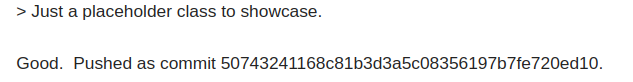

July 18, 2026
About a month ago I (indirectly) contributed to this framework. Given that I've been seeing how much HTML I can get away with in framework, naturally I ran into a bug and reported it.
Skribilo has a table of contents (toc) object, which I wanted to use. However, I noticed that no matter which styles I used, they would not be reflected. This is because the toc object wasn't reading the :class attribute. I tried to find a solution for this myself, however I gave up and contacted the developers directly.
They noticed it, fixed it, and commited the patch for it, in which I'm credited for reporting it!!

That's it, that's the post. Hopefully I can keep exploiting this framework and find more bugs lol